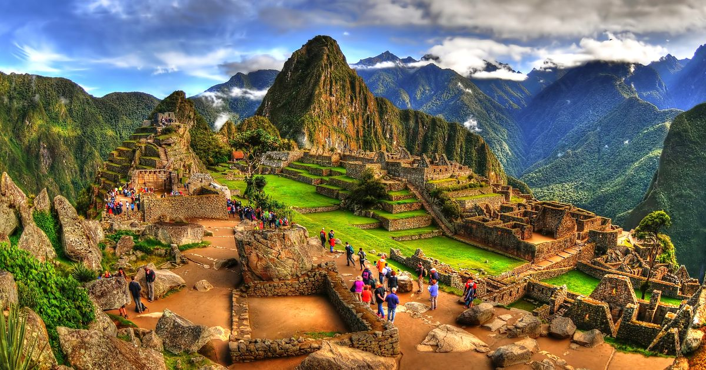

- Visitar el santuario Histórico de Machu Picchu, maravilla del Nuevo Mundo
- Machu Picchu siempre será la joya más valiosa de Perú. Cada día, los visitantes dejan volar su imaginación mientras exploran estas misteriosas ruinas. Los arqueólogos continúan restaurando el complejo inca, redescubriendo la organización de la ciudad en templos, centros urbanos, piedras sagradas y más. La visita te sumerge en el fantástico mundo del pasado.

Al reproducir el audio podremos escuchar e imaginar la naturaleza de machu Picchu: